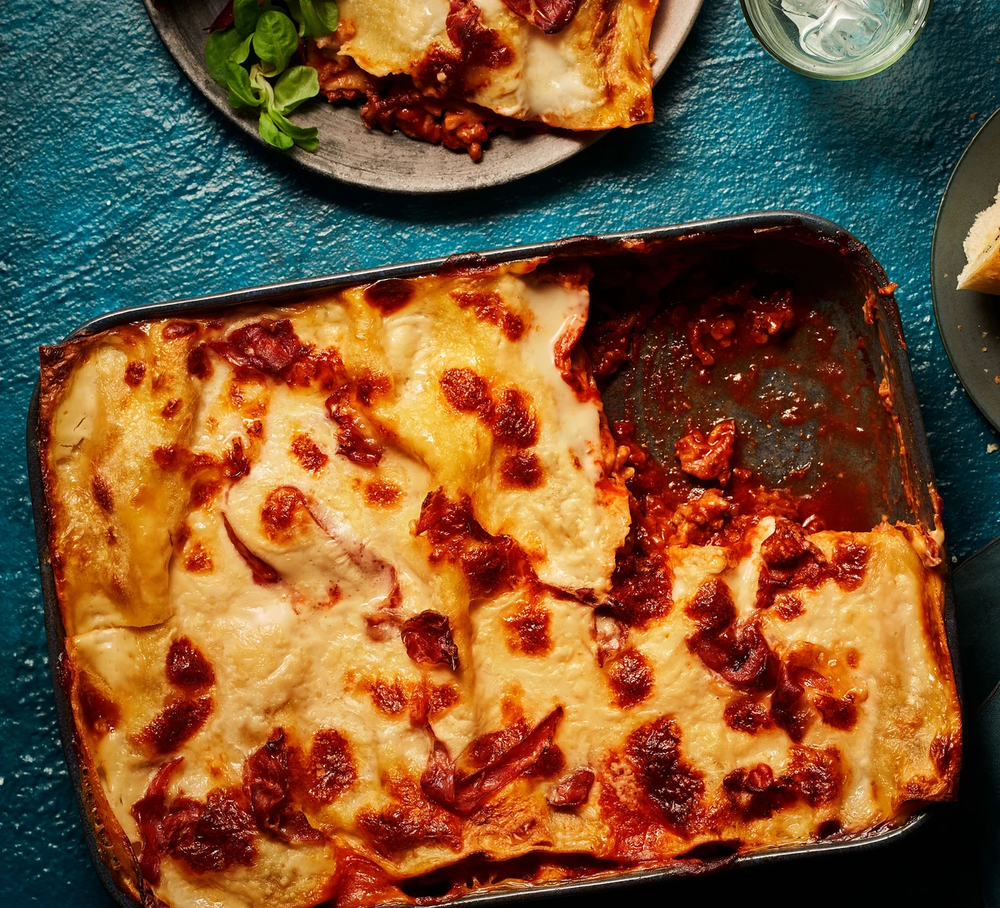

Lasagna

Lasagna, a quintessential Italian dish, is a culinary masterpiece that tantalizes taste buds with layers of rich flavors and textures. At its core, lasagna features sheets of al dente lasagna noodles alternated with hearty meat sauce simmered with onions, garlic, tomatoes, and aromatic herbs, followed by a velvety blanket of creamy béchamel sauce. Between these layers, sautéed vegetables and a mixture of ricotta cheese, egg, parsley, and Parmesan cheese add depth and freshness. Topped with melted mozzarella cheese, the lasagna is baked to perfection, creating a harmonious marriage of flavors and textures that promise a comforting and indulgent culinary experience, whether enjoyed as a cozy family meal or served at a festive gathering.
Ingredients
2 olive oil, plus extra for the dish
750g lean beef mince
90g pack prosciutto
800g passata or half our basic tomato sauce
200ml hot beef stock
nutmeg
300g fresh lasagne sheets
white sauce (find a recipe in the method, or use shop-bought)
125g ball mozzarella, torn into thin strips
Method
STEP 1
To make the meat sauce, heat 2 tbsp olive oil in a frying pan and cook 750g lean beef mince in two batches for about 10 mins until browned all over.
STEP 2
Finely chop 4 slices of prosciutto from a 90g pack, then stir through the meat mixture.
STEP 3
Pour over 800g passata or half our basic tomato sauce recipe and 200ml hot beef stock. Add a little grated nutmeg, then season.
STEP 4
Bring up to the boil, then simmer for 30 mins until the sauce looks rich.
STEP 5
heat the oven to 180C/160C fan/gas 4 and lightly oil an ovenproof dish (about 30 x 20cm).
STEP 6
Spoon one third of the meat sauce into the dish, then cover with some fresh lasagne sheets from a 300g pack. Drizzle over roughly 130g ready-made or homemade white sauce.
STEP 7
Repeat until you have three layers of pasta. Cover with the remaining 390g white sauce, making sure you can’t see any pasta poking through.
STEP 8
Scatter 125g torn mozzarella over the top.
STEP 9
Arrange the rest of the prosciutto on top. Bake for 45 mins until the top is bubbling and lightly browned.